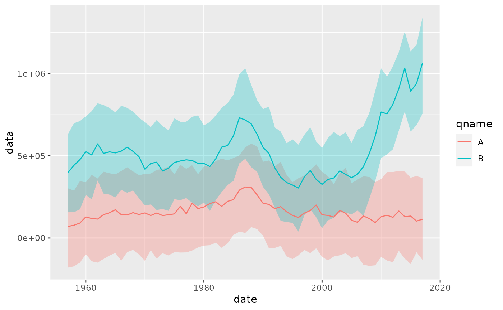
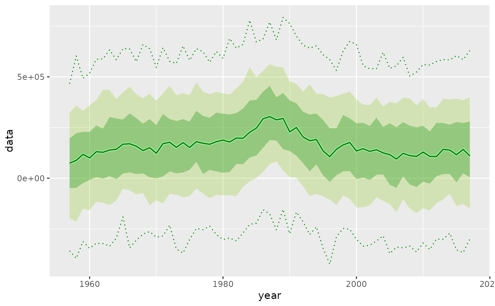

Sampling quantiles
geom_flquantiles.RdThis `geom` calculates sampling quantiles and draws a ribbon for the quantile range plus a line for the median (50% quantile).
geom_flquantiles(mapping = NULL, data = NULL, stat = "FLQuantiles", position = "identity", show.legend = NA, inherit.aes = TRUE, na.rm = TRUE, probs = c(0.1, 0.9), alpha = 0.5, ...) stat_flquantiles(mapping = NULL, data = NULL, geom = "line", position = "identity", na.rm = TRUE, show.legend = NA, inherit.aes = TRUE, ...)
Arguments
| mapping | Set of aesthetic mappings created by |
|---|---|
| data | The data to be displayed in this layer. There are three options: If A A |
| stat | The statistical transformation to use on the data for this layer, as a string. |
| position | Position adjustment, either as a string, or the result of a call to a position adjustment function. |
| show.legend | logical. Should this layer be included in the legends?
|
| inherit.aes | If |
| na.rm | If |
| probs | Quantiles to compute and draw, defaults to c(0.10, 0.90). |
| alpha | Transparency for quantile ribbon. |
| ... | Other arguments passed on to |
| geom | The geometric object to use display the data |
Details
As this `geom` outputs two layers, although based on different `geoms`, interactions between common parameters need to be considered. The `fill` parameter will only affect the quantile range `ribbon`, but `colour` will be passed to both the `ribbon` and median `line` layers. The defaults are no lines on the quantiles and "black" for the median line. The `alpha` value has been hard coded to 1 for the median line, so only affects the quantile `ribbon`. To change this, call `stat_flquantiles` directly, as in the examples below.
`stat_flquantiles` will return between one and three `y` values depending on the number of quantiles requested. If two quantiles are to be calculated, it will return the corresponding `ymin` and `ymax`, to be used with, for example, `geom_ribbon`. If only one quantile is to be calculated, it will be returned as `y`, to be used typically by `geom_line`. Finally, if three values are passed in the `probs` argument, all of the above will be returned, in the right order.
Aesthetics
`geom_flquantiles` understands the following aesthetics (required aesthetics are in bold): - `*x*` - `*y*` - `alpha` - `colour` - `fill` - `group` - `linetype` - `size`
Computed variables
- y
quantile, if only one requested or central one when if three
- ymin
lower quantile, if two or three requested
- ymax
upper quantile, if two or three requested
Examples
data(ple4) flq <- rnorm(250, catch(ple4), 200000) ggplot(flq, aes(x=date, y=data)) + geom_flquantiles(probs=c(0.25, 0.75), fill="red", alpha=0.25)# Draw two quantiles with two calls to geom_flquantiles ggplot(flq, aes(x=date, y=data)) + geom_flquantiles(probs=c(0.25, 0.75), alpha=0.25, fill="red") + geom_flquantiles(probs=c(0.10, 0.90), alpha=0.15, fill="red")# Use it on an FLQuants, colouring by their name flqs <- FLQuants(A=rnorm(250, catch(ple4), 200000), B=rnorm(250, stock(ple4), 200000)) ggplot(flqs, aes(x=date, y=data, group=qname)) + geom_flquantiles(probs=c(0.10, 0.90), aes(fill=qname), alpha=c(0.30))# Or facet them ggplot(flqs, aes(x=date, y=data)) + geom_flquantiles(probs=c(0.10, 0.90), fill="red", alpha=c(0.30)) + facet_grid(qname~.)# For greater control, call stat_flquantiles directly with a geom ggplot(flq, aes(x=year, y=data)) + stat_flquantiles(probs=c(0.10, 0.90), geom = "ribbon", fill="yellowgreen", alpha=0.30) + stat_flquantiles(probs=c(0.01), geom = "line", colour = "green4", linetype=3) + stat_flquantiles(probs=c(0.99), geom = "line", colour = "green4", linetype=3) + stat_flquantiles(probs=c(0.25, 0.75), geom = "ribbon", fill="green4", alpha=0.30) + stat_flquantiles(probs=c(0.50), geom = "line", size=1.5, colour = "lightgreen") + stat_flquantiles(probs=c(0.50), geom = "line", colour = "darkgreen")